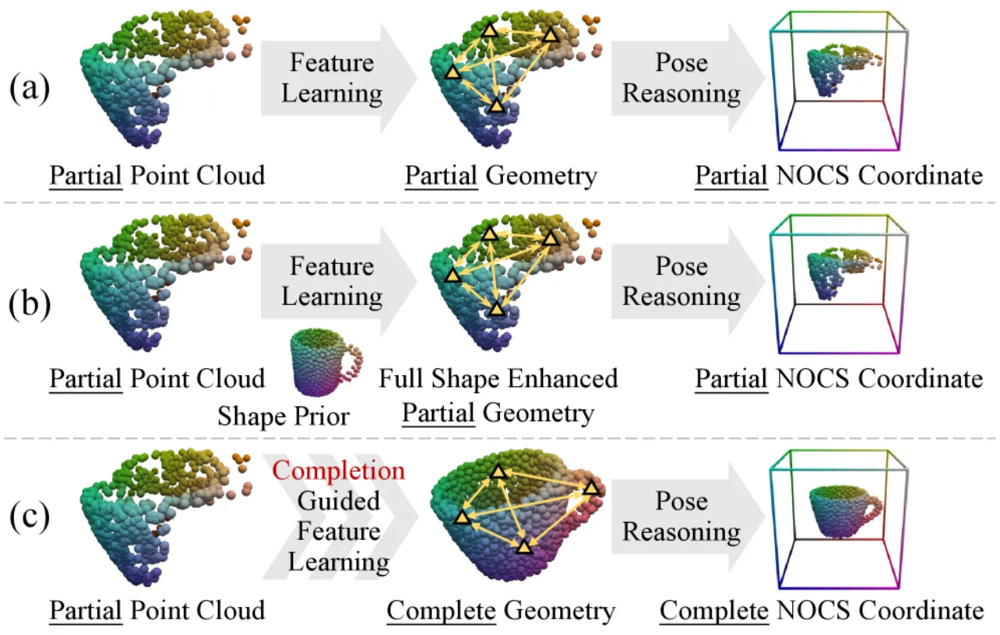
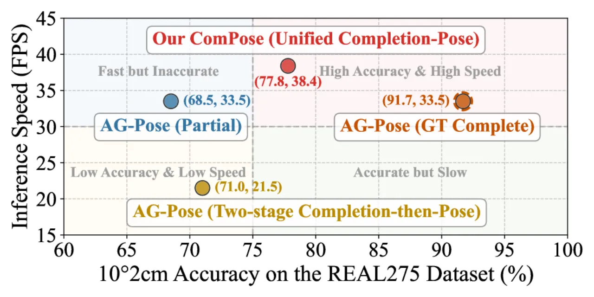
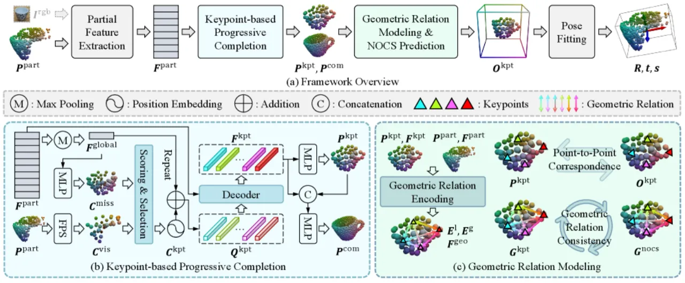
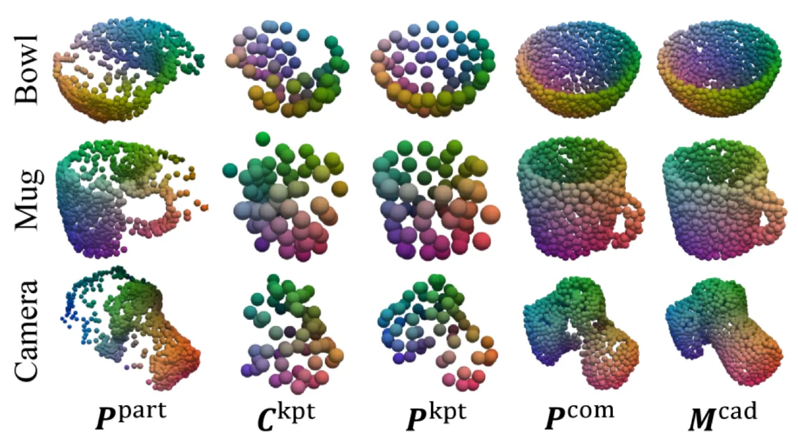
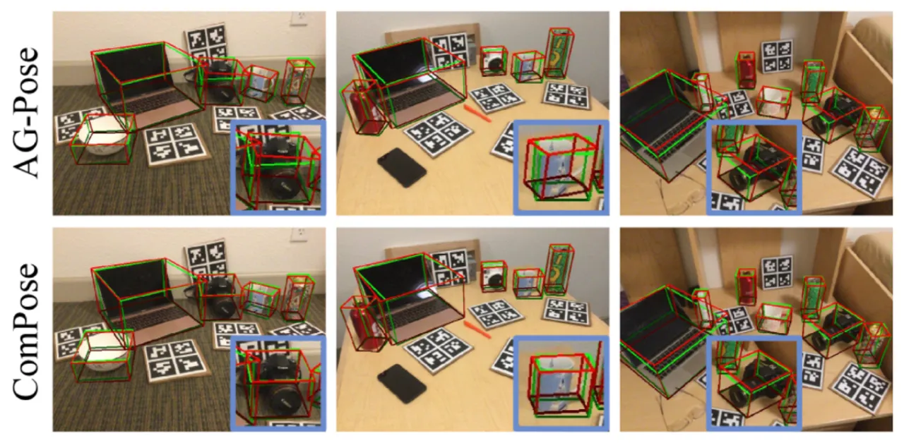

深度相机拍摄的物体点云天然不完整——自遮挡导致背面信息缺失，严重制约姿态估计精度。 ComPose 将点云补全与姿态估计统一在单个网络中，通过关键点渐进补全恢复完整几何，再辅以几何关系编码和一致性约束，在无需类别形状先验的条件下同时实现高精度与高效率。
类别级物体姿态估计旨在预测特定类别内任意物体的 6D 姿态与 3D 尺寸，无需实例级 CAD 模型。 现有方法的核心瓶颈：观测点云的固有不完整性——深度相机因自遮挡只能捕获物体正面，导致网络无法感知完整形状。

"how can we effectively and efficiently integrate the complete geometric cues recovered from point cloud completion to enhance object pose estimation?"
作者通过 oracle 实验量化了完整几何的上界价值：将 AG-Pose（当前最优 depth-only 方法）的输入替换为 ground-truth 完整点云（网络架构不变），10°2cm 精度从 68.5% 跃升至 91.7%，增幅高达 23.2 个百分点。 但朴素的"先补全再估计"两阶段流水线仅能达到 71.0%，且推理速度从 33.5 FPS 骤降至 21.5 FPS——说明简单级联补全与估计网络无法充分挖掘完整几何的潜力。

ComPose 由四个模块串联构成：(1) 残缺特征提取，(2) 基于关键点的渐进补全，(3) 几何关系编码，(4) 基于对应关系的姿态估计。 输入为残缺点云 Ppart（和可选 RGB 图像），输出 6D 旋转 R ∈ SO(3)、平移 t ∈ ℝ³、尺寸 s ∈ ℝ³。

对残缺点云 Ppart 使用 PointNet++ 提取逐点几何特征 Fpn。 在 RGB-D 模式下，还引入 DINOv2 提取姿态一致的语义特征 Fdino，与几何特征拼接并投影到 D 维。 随后通过 Self-Attention (SA) 层捕获全局上下文，得到残缺表示 Fpart。
粗关键点生成：全局 max pooling 得到 fglobal，MLP 预测缺失关键点候选 Cmiss；FPS 采样可见关键点候选 Cvis；二者合并后由 scoring MLP 自适应选出 Nkpt=64 个代表关键点 Ckpt。
渐进精化：以 fglobal+PE(Ckpt) 构造查询 Qkpt，通过 Cross-Attention + Self-Attention 与 Fpart 交互，输出精化关键点坐标 Pkpt 和稠密完整点云 Pcom（Ncom=1024 点）。
训练时以 Chamfer Distance 对 {Cmiss, Pkpt, Pcom} 分别监督。
对每个关键点 Pkptn，从 Ppart 检索 Nknn 个近邻点及特征，计算：
• 局部关系嵌入 Eln = MLP(Pkptn − Pknnn)
• 全局关系嵌入 Egn = MLP(Pkptn − Pkpt)
交替通过 Cross-Attention 和 AvgPool 增强关键点特征，得到几何感知表示 Fgeo。
经典 point-to-point 损失无法捕获全局结构——两组 NOCS 坐标可能逐点误差相近却整体形状迥异。
本文提出几何关系一致性损失：计算关键点缩放坐标 Pkpt/‖sgt‖₂ 的成对 L₂ 距离矩阵 Gkpt，以及预测 NOCS 坐标的对应矩阵 Gnocs，强制二者一致：
Lgeo = (1/N2kpt) Σn,m (Gkptn,m − Gnocsn,m)²
总损失：Lall = λcomLcom + λscoreLscore + λcorrLcorr + λgeoLgeo（λcom=15, λscore=1, λcorr=2, λgeo=1）

在三个基准数据集上评估：CAMERA25（27.5万合成图像，6类）、REAL275（真实世界，4.3K训练/2.75K测试，6类）、HouseCat6D（20K训练/3K测试，10类，含严重遮挡）。 评估指标：n°m cm 精度（旋转误差 <n°且平移误差 <m cm 的预测比例）与 IoUx 3D 尺寸精度。 实例分割掩码与 AG-Pose 相同（Mask R-CNN）。
| 方法 | 形状先验 | IoU50 | IoU75 | 5°2cm | 5°5cm | 10°2cm | 10°5cm |
|---|---|---|---|---|---|---|---|
| SAR-Net [11] | ✓ | 79.3 | 62.4 | 31.6 | 42.3 | 50.3 | 68.3 |
| RBP-Pose [43] | ✓ | — | 67.8 | 38.2 | 48.1 | 63.1 | 79.2 |
| DR-Pose [45] | ✓ | 78.9 | 68.2 | 41.7 | 46.0 | 67.7 | 76.3 |
| GPV-Pose [5] | ✗ | — | 64.4 | 32.0 | 42.9 | — | 73.3 |
| HS-Pose [44] | ✗ | 82.1 | 74.7 | 46.5 | 55.2 | 68.6 | 82.7 |
| Query6DoF [37] | ✗ | 82.5 | 76.1 | 49.0 | 58.9 | 68.7 | 83.0 |
| AG-Pose* [15] | ✗ | 83.2 | 75.6 | 48.8 | 58.8 | 68.5 | 80.8 |
| ComPose（本文） | ✗ | 82.1 | 77.0 | 55.6 | 61.3 | 77.8 | 85.0 |
| 方法 | 形状先验 | IoU50 | IoU75 | 5°2cm | 5°5cm | 10°2cm | 10°5cm |
|---|---|---|---|---|---|---|---|
| SPD [31] | ✓ | 77.3 | 53.2 | 19.3 | 21.4 | 43.2 | 54.1 |
| GCE-Pose [10] | ✓ | 84.1 | 79.8 | 57.0 | 65.1 | 75.6 | 86.3 |
| AG-Pose [15] | ✗ | 84.1 | 80.1 | 57.0 | 64.6 | 75.1 | 84.7 |
| SpotPose [29] | ✗ | 84.1 | 81.2 | 59.7 | 64.8 | 81.5 | 88.2 |
| CleanPose [16] | ✗ | — | — | 61.5 | 67.4 | 78.3 | 86.2 |
| ComPose（本文） | ✗ | 84.0 | 81.4 | 62.1 | 68.0 | 81.8 | 89.2 |
| 方法 | Setting | IoU25 | IoU50 | 5°2cm | 5°5cm | 10°2cm | 10°5cm |
|---|---|---|---|---|---|---|---|
| AG-Pose* [15] | D-only | 81.4 | 59.9 | 9.7 | 10.6 | 25.9 | 29.7 |
| ComPose | D-only | 81.6 | 65.1 | 11.8 | 12.7 | 34.8 | 38.9 |
| GCE-Pose [10] | RGB-D | — | 79.2 | 24.8 | 25.7 | 55.4 | 58.4 |
| AG-Pose [15] | RGB-D | 88.1 | 76.9 | 21.3 | 22.1 | 51.3 | 54.3 |
| ComPose | RGB-D | 90.3 | 80.6 | 25.8 | 27.6 | 57.8 | 61.5 |

将完整形状恢复替换为 AG-Pose 的局部实例重建（仅可见区域），5°2cm 下降 6%（55.6→49.6），证明完整几何对精确姿态估计的关键作用。 去除稠密完整形状 Pcom，10°5cm 下降 1.7%（85.0→83.3）。
无编码、无一致性约束的基线：5°2cm 仅 49.5%。 加入几何关系编码 +4.3%（→53.8%），再加入几何关系一致性约束 +1.8%（→55.6%），两者均显著有益。
| 方法 | 设置 | 形状先验 | CDunit ↓ | CD ↓ |
|---|---|---|---|---|
| SPD [31] | RGB-D | ✓ | 8.89 | — |
| SGPA [1] | RGB-D | ✓ | 5.51 | — |
| DR-Pose [45] | D | ✓ | 5.26 | — |
| ComPose | RGB-D | ✗ | 4.20 | 0.17 |
| ComPose | D | ✗ | 6.09 | 0.23 |
Chamfer Distance (×10⁻³)。ComPose 在无形状先验条件下于观测空间直接重建完整形状，RGB-D 版本 CDunit=4.20，优于所有使用形状先验的 canonical space 重建方法。
| 方法 | 是否加遮挡 | 5°2cm | 5°5cm | 10°2cm | 10°5cm |
|---|---|---|---|---|---|
| AG-Pose* [15] | × | 48.8 | 58.8 | 68.5 | 80.8 |
| AG-Pose* [15] | ✓ | 37.1 | 49.1 | 54.3 | 72.6 |
| AG-Pose 下降幅度 | 24.0% | 16.5% | 20.7% | 10.1% | |
| ComPose | × | 55.6 | 61.3 | 77.8 | 85.0 |
| ComPose | ✓ | 42.7 | 53.6 | 62.9 | 77.7 |
| ComPose 下降幅度 | 23.2% | 12.6% | 19.2% | 8.6% |
在 5°5cm 指标上，AG-Pose 精度下降 16.5%，而 ComPose 仅下降 12.6%，表明完整形状补全带来了更强的遮挡鲁棒性。
ComPose 的输入为预先经过 Mask R-CNN 分割的单实例残缺点云。 因此，分割质量（掩码精度、类别召回）直接影响最终姿态精度，对复杂遮挡或多实例密集场景的鲁棒性仍受制于上游分割模块。 尽管作者指出补全模块可过滤不准确分割引入的离群点，但根本问题未被消除。
Oracle 实验表明完整点云输入可将 10°2cm 提升至 91.7%，而 ComPose 实际仅达到 77.8%，差距约 14 个百分点。 这意味着补全质量（尤其是高遮挡情形下）仍是瓶颈，进一步提升补全精度有望带来可观的收益空间。
为监督观测空间的形状补全（Lcom），训练时需要将 CAD 模型 Mcad 通过 ground-truth 姿态 {Rgt, tgt, sgt} 变换到观测空间作为监督信号。 这要求训练数据集提供完整的 CAD 模型和精确的 GT 姿态标注，限制了在纯真实数据（无 CAD 模型）上的训练泛化性。
实验仅覆盖 REAL275（6 类）和 HouseCat6D（10 类）等室内桌面物体，均为相对规则的刚体。 对于形状更不规则、类内变化极大（如衣物、食物）或铰接物体，方法的泛化能力尚未被验证。